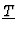
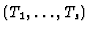
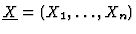
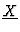
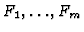
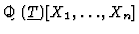
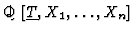

Many practical problems can be easily solved if we are able to find
the solution of an algebraic system of equations with parametric
coefficients for any (or for many) values of the parameters. In these
problems the use of Gröbner Bases techniques to rewrite the given
equations in easier ways (for example, in triangular form) have to be
completed with other techniques to determine which are the values of the
parameters that preserve the good properties of the Gröbner bases
computations. In this paper we address this question, for the case of
homogeneous polynomial systems, by focusing our attention to the using of the
already available tools inside the FRISCO framework [5] such as the
PoSSoLib. As a final result it is obtained an efficient implementation
dealing with the problem of solving a homogeneous polynomial system of
equations containing parameters when using Gröbner Bases as the main
tool.
Let

be the parameters

and

the unknowns. The problem to solve is the
determination (whatever it means and to be clarified later) of the solution
set of the polynomial system of equations:
where the Fi's are homogeneous polynomials in the variables

.
Two different questions arise naturally in
this context: first, to get the conditions the parameters must verify in
order the considered homogeneous system has a solution and, second, to
describe, in some way, the solutions, i.e., the dependency between every
unknown and the parameters.
Different methods can be found in the Computer Algebra literature addressing
this problem in general (not only for the homogeneous case). Mainly:
- To use Comprehensive Gröbner Bases (see [14]).
- The notion of Comprehensive Gröbner Bases (see [14]) is
exactly, if it is easy to compute, what we want to obtain: an explicit
partition of the parameter space together with a Gröbner Basis of the
considered ideal, already specialized, for every subset in such
partition. The main problem with this approach is that, in its general
version, is highly inefficient due mainly to the big number of sets
appearing in such partition.
- To use the Dynamic Evaluation Method (see [4]).
- By using only ``well parametrized" gcd computations and a ``case by
case" methodology, a complete description of the solution set is obtained in
terms of conditions on the parameters.
- To use multivariate resultants (see [13]).
- The usual techniques based upon resultants work only when the numbers of
equations and unknowns are equal, they require the computation of
determinants of matrices with a very big size and polynomial entries and,
initially, they only provide the conditions on the parameter space in order
the considered system has a solution.
- To use triangular sets (see [8]and the references contained
there) .
- It is close in spirit to the Dynamic Evaluation Method before mentioned
but stronger algebraic techniques are used in order to remove multiplicities
from the different solution sets which helps to improve the efficiency of the
method.
- To use specific Linear Algebra tools for parametric linear systems (see
[11]).
- An ad-hoc using of Cramer's rule together with a parameter dependent
rank computation of matrices with polynomial entries provide a specific
solution for this case.
In this paper our goal is to show how, with a not very expensive cost, the
using of Gröbner Bases can help to get answers when trying to describe the
solution set of the considered homogeneous system in terms of the parameters.
Since the tool chosen to be used is the computation of Gröbner Bases, the
first section presents, in an unified way, the behaviour of Gröbner Bases
under specialization. Two strategies can be initially adopted:
- To compute a Gröbner Basis of the ideal generated by the
polynomials

in

(with
respect to any monomial ordering) together with the ``good" specialization
conditions on
(see [3]).
- To compute a Gröbner Basis of the ideal generated by the
polynomials
in

(with
respect to any monomial ordering) together with the ``good" specialization
conditions on
.
Anyway, the new system is always equivalent to
the first one, even if it is not a Gröbner Basis (see [7] or
[9]).
and their analysis is done is the first section. This section shows also how
to adapt the strategy in [6] to avoid the
growing the coefficients in the Gröbner Basis in order to get a list of
open conditions on the parameter space where a Gröbner Basis is available
after specialization.
The second section contains the main result of this paper: it is shown, when
working in
,
how to use the Hilbert
Function in order to obtain a set of conditions on the parameters providing
that the specialization of a ``generic" Gröbner Basis in such polynomial
ring is again a Gröbner Basis of the specialized homogeneous polynomial
system. Last two sections are devoted, first, to indicate to
use these techniques to deal with polynomial system solving involving
parameters and homogeneous polynomials and, second, to present the
implementation of these algorithms in the PoSSoLib.
IMACS ACA'98 Electronic Proceedings